Hướng dẫn sử dụng theo vai trò
Trong ảnh, các ô viền đỏ có số (1), (2)… là chỗ cần bấm hoặc cần xem. Số trong ảnh khớp với số trong các bước hướng dẫn ngay bên dưới.
Mỗi tài khoản có đúng một vai trò. Menu chỉ hiện những màn hình vai trò đó được dùng.
| Chức năng | Quản trị | Điều phối | Quản lý đội xe | Quản lý vận hành | Tài xế |
|---|---|---|---|---|---|
| Tổng quan, Theo dõi trực tiếp, Lịch sử & báo cáo | ✔ | ✔ | ✔ | ✔ | — |
| Đơn hàng: xem | ✔ | ✔ | — | ✔ | — |
| Đơn hàng: thêm, sửa, xóa, nhập file | ✔ | ✔ | — | chỉ xem | — |
| Đội xe: xem | ✔ | ✔ | ✔ | ✔ | — |
| Đội xe: thêm, sửa, nhập file | ✔ | — | ✔ | — | — |
| Lập tuyến, phát hành cho tài xế | ✔ | ✔ | chỉ xem | chỉ xem | — |
| Kịch bản nhiên liệu | ✔ | ✔ | ✔ | ✔ | — |
| Quản trị: tài khoản, hệ số, dữ liệu, nhật ký | ✔ | — | — | — | — |
| App tài xế: tuyến của mình, giao hàng, chia sẻ vị trí | — | — | — | — | ✔ |
| Bước | Ai làm | Việc cần làm | Màn hình |
|---|---|---|---|
| 1 | Quản trị | Tạo tài khoản, cấu hình giá nhiên liệu và hệ số (làm một lần, cập nhật khi giá đổi) | Quản trị |
| 2 | Quản lý đội xe | Khai báo xe, đánh dấu xe sẵn sàng trong ngày | Đội xe |
| 3 | Điều phối | Nhập đơn hàng trong ngày (form hoặc file CSV/XLSX) | Đơn hàng |
| 4 | Điều phối | Chạy tối ưu, kiểm tra kết quả và so sánh với baseline | Lập tuyến |
| 5 | Điều phối | Phát hành tuyến cho tài xế | Lập tuyến |
| 6 | Tài xế | Bắt đầu ca, giao từng điểm, ghi nhận đã giao / không giao được | App tài xế |
| 7 | Điều phối | Theo dõi vị trí và tiến độ, xử lý đơn thất bại | Theo dõi trực tiếp |
| 8 | Quản lý vận hành | Xem chỉ số, so sánh nhiên liệu, xuất báo cáo | Tổng quan, Kịch bản, Lịch sử |
Thanh Quy trình hôm nay trên trang Tổng quan hiện các bước 1–5 của ngày và nút Làm ngay ở bước tiếp theo cần làm.
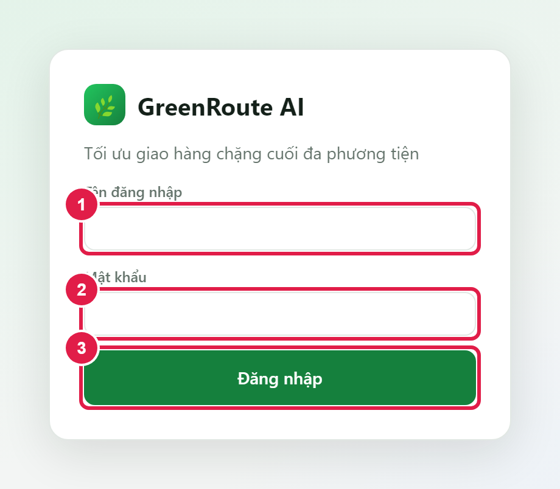
Hình 1. Màn hình đăng nhập
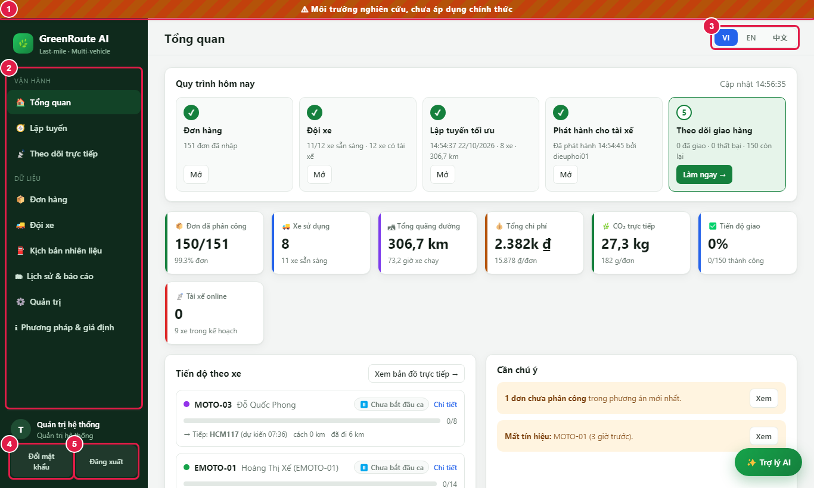
Hình 2. Bố cục chung của web quản lý
| Số | Thành phần | Ý nghĩa |
|---|---|---|
| (1) | Banner cam | Nhắc đây là môi trường nghiên cứu, số liệu chưa dùng chính thức. |
| (2) | Menu | Các màn hình theo vai trò. Trên điện thoại, bấm nút ☰ để mở menu. |
| (3) | VI · EN · 中文 | Đổi ngôn ngữ giao diện. Thông báo lỗi từ máy chủ hiện vẫn bằng tiếng Việt. |
| (4) | Đổi mật khẩu | Xem 1.6. |
| (5) | Đăng xuất | Thoát tài khoản trên máy này. |
Ở mọi màn hình, bấm vào mã đơn (ví dụ HCM001) hoặc mã xe (ví dụ MOTO-01) để mở ngăn chi tiết bên phải. Nhấn Esc hoặc dấu × để đóng.
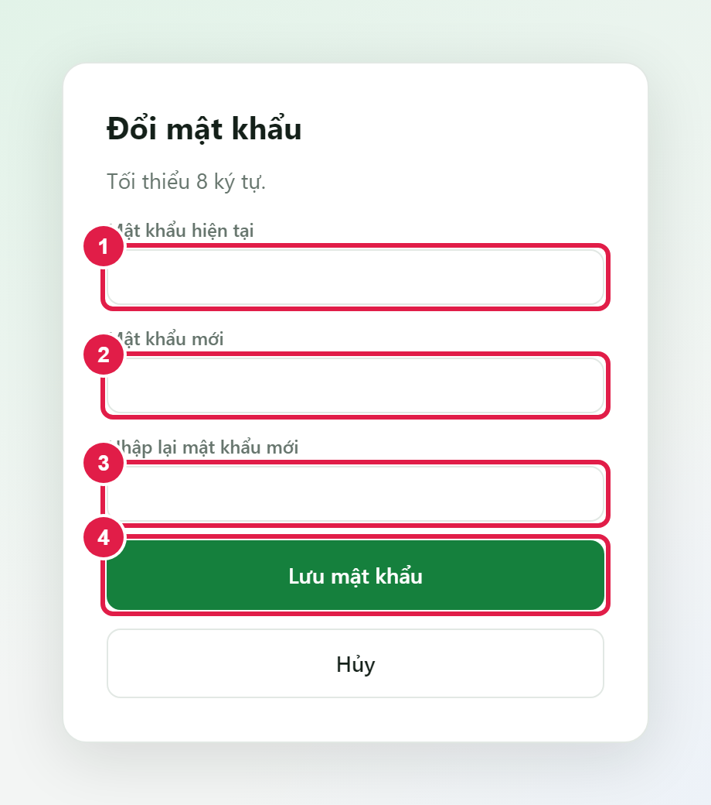
Hình 3. Đổi mật khẩu
Quên mật khẩu: nhờ Quản trị bấm Đặt lại MK cho tài khoản của bạn (xem 2.2).
Quản trị tạo tài khoản, quản lý hệ số phát thải và giá nhiên liệu, nạp dữ liệu mẫu và xem nhật ký. Menu Quản trị có 4 thẻ: Tài khoản & phân quyền, Hệ số, giá & trọng số, Dữ liệu mẫu, Nhật ký.
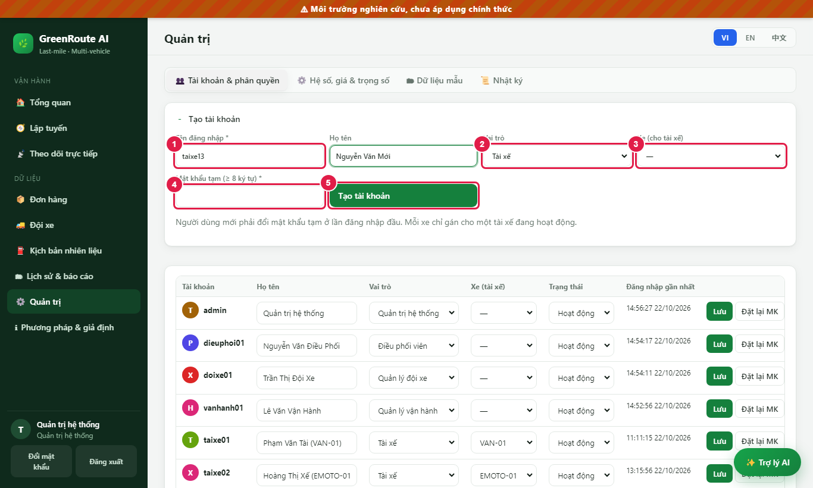
Hình 4. Tạo tài khoản mới (ví dụ tài xế)
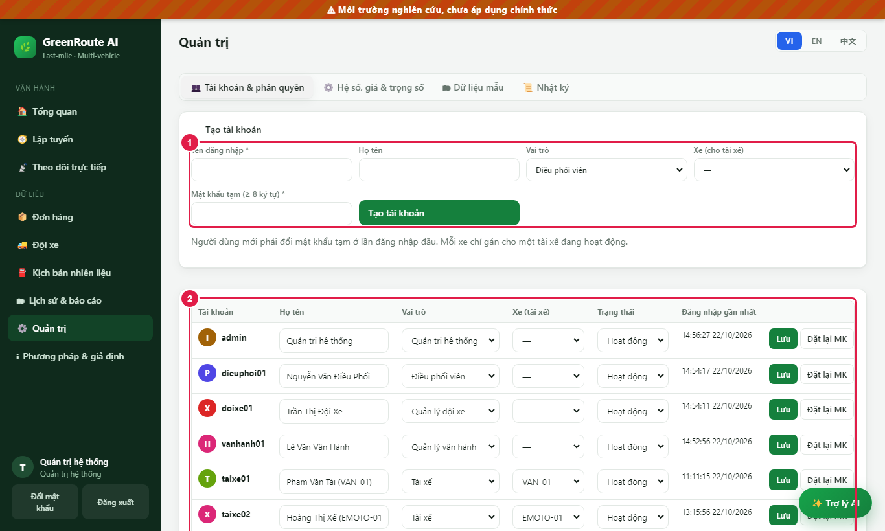
Hình 5. Danh sách tài khoản
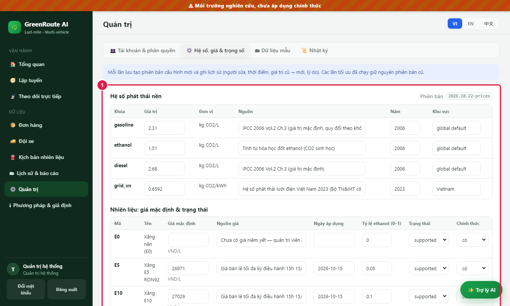
Hình 6. Bảng hệ số và giá
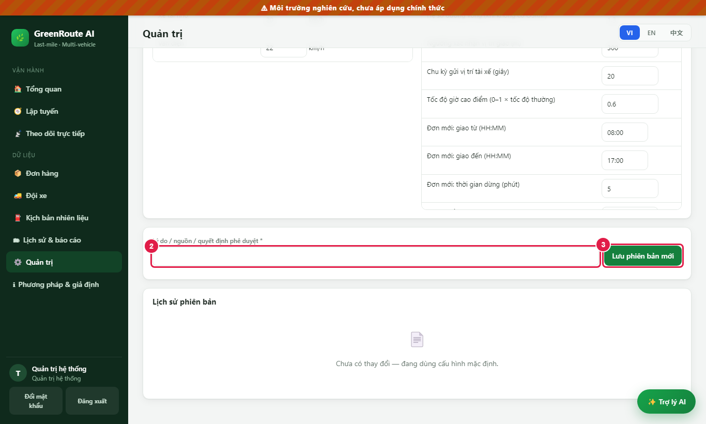
Hình 7. Ghi lý do và lưu phiên bản mới
Giá xăng E5, E10, diesel đang theo kỳ điều hành 15/10/2026. Giá điện 3.000 ₫/kWh là giả định. Cần cập nhật khi Bộ Công Thương điều chỉnh giá.
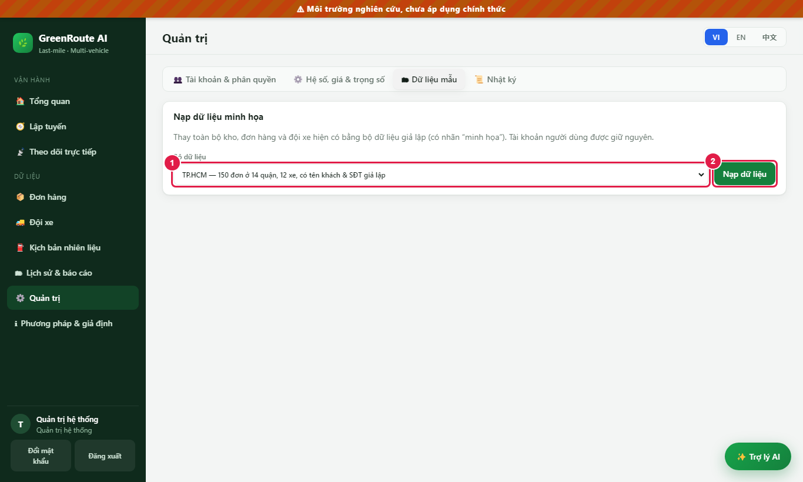
Hình 8. Nạp dữ liệu mẫu
Nạp dữ liệu mẫu thay thế toàn bộ đơn hàng và đội xe hiện có. Chỉ dùng khi muốn làm lại từ đầu.
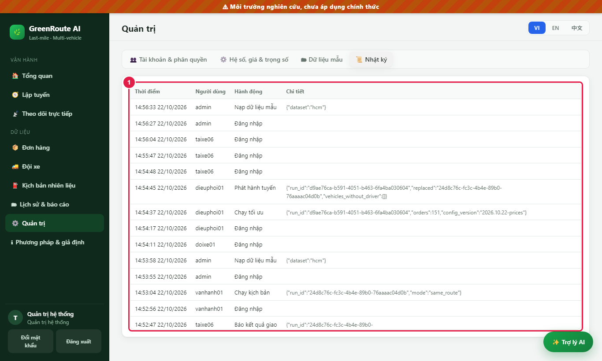
Hình 9. Nhật ký thao tác
Thẻ Nhật ký (1) ghi ai làm gì, lúc nào: đăng nhập, tạo/sửa tài khoản, sửa cấu hình, nạp dữ liệu, chạy tối ưu, phát hành, tài xế bắt đầu/kết thúc ca.
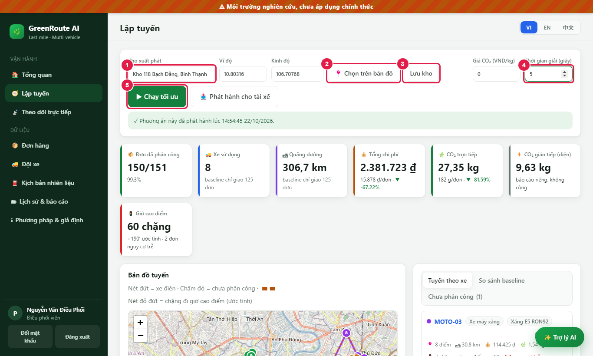
Hình 10. Kho xuất phát và nút chạy tối ưu (trang Lập tuyến)
Đăng nhập xong, Quản lý đội xe vào thẳng màn hình Đội xe.
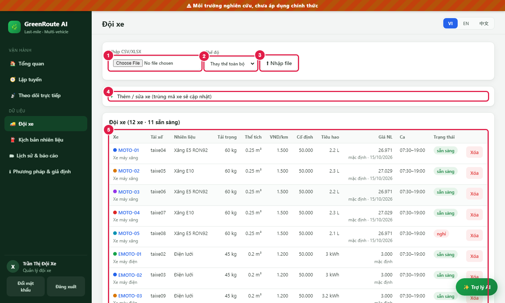
Hình 11. Màn hình Đội xe
Cột của file xe: vehicle_id, vehicle_type, capacity_weight_kg, capacity_volume_m3, cost_per_km, fixed_cost_vnd, fuel_blend_code, consumption_rate, fuel_price, available, start_time, end_time. File mẫu: data/sample_hcm/vehicles.csv trong mã nguồn.
Bảng (5) liệt kê từng xe: tài xế, nhiên liệu, tải trọng, chi phí, tiêu hao, giá năng lượng, ca làm và trạng thái.
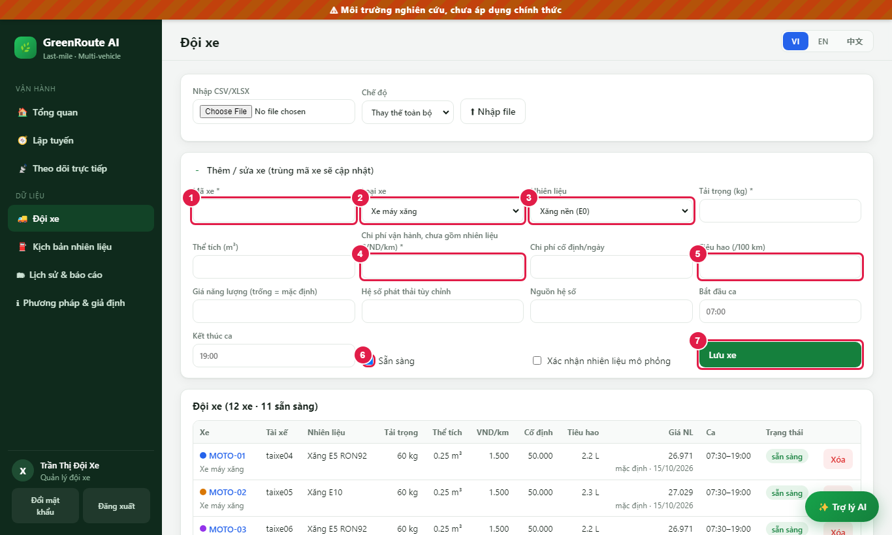
Hình 12. Form thêm / sửa xe
| Trường | Cách nhập |
|---|---|
| Tải trọng (kg), Thể tích (m³) | Sức chứa tối đa. Bộ tối ưu không bao giờ xếp vượt. |
| Chi phí vận hành (VND/km) | Khấu hao, bảo dưỡng, nhân công… Không gồm tiền xăng/điện, vì tiền năng lượng được tính riêng = lượng tiêu thụ × giá. Nhập cả tiền xăng sẽ bị tính 2 lần. |
| Chi phí cố định/ngày | Tính một lần cho mỗi xe được dùng trong ngày. |
| Tiêu hao (/100 km) | Xe xăng/dầu: lít/100 km. Xe điện: kWh/100 km. Để trống = không tính được nhiên liệu và CO₂ (có cảnh báo). |
| Giá năng lượng | Để trống = dùng giá mặc định do Quản trị cấu hình. |
| Hệ số phát thải tùy chỉnh, Nguồn hệ số | Chỉ nhập khi có hệ số riêng có nguồn rõ ràng. Để trống = dùng hệ số chung. |
| Bắt đầu ca, Kết thúc ca | Giờ xe rời kho và giờ phải về kho (HH:MM). |
| Xác nhận nhiên liệu mô phỏng | Bắt buộc khi chọn E20, E25, E85: hệ số các loại này chỉ là ước tính. |
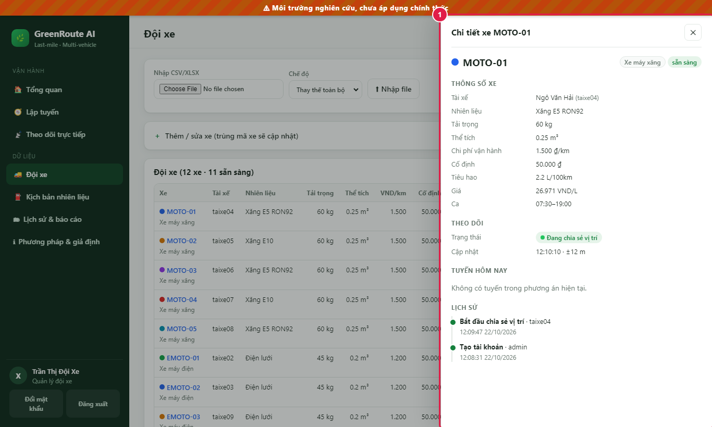
Hình 13. Ngăn chi tiết xe
Bấm mã xe ở bất kỳ bảng nào để xem thông số, tài xế, tuyến hôm nay, quãng đường, chi phí, CO₂ và tiến độ giao.
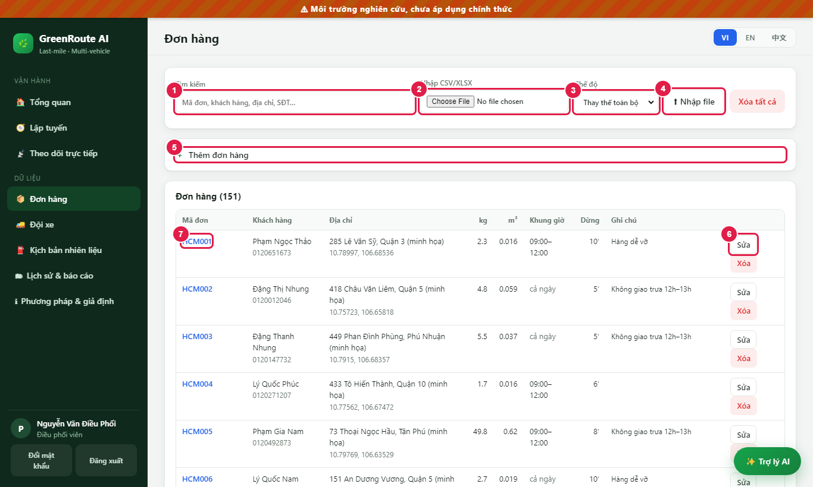
Hình 14. Màn hình Đơn hàng
| Số | Chức năng |
|---|---|
| (1) | Tìm theo mã đơn, tên khách, địa chỉ, số điện thoại. |
| (2) | Chọn file đơn hàng CSV hoặc XLSX. |
| (3) | Chế độ nhập: Thay thế toàn bộ hoặc Thêm vào. |
| (4) | Nhập file. Có dòng lỗi thì không lưu gì, sửa file rồi nhập lại. Thiếu thể tích chỉ là cảnh báo, đơn vẫn được lưu. |
| (5) | Mở form thêm một đơn (4.2). |
| (6) | Sửa đơn (4.3). Nút Xóa bên dưới xóa đơn sau khi xác nhận. |
| (7) | Bấm mã đơn để xem chi tiết (4.4). |
Cột của file đơn: order_id, customer_name, phone, address, latitude, longitude, weight_kg, volume_m3, delivery_window_start, delivery_window_end, service_time_min, priority, note. Bắt buộc: mã đơn và tọa độ (hoặc địa chỉ đã định vị được). Giờ giao đến phải sau giờ giao từ.
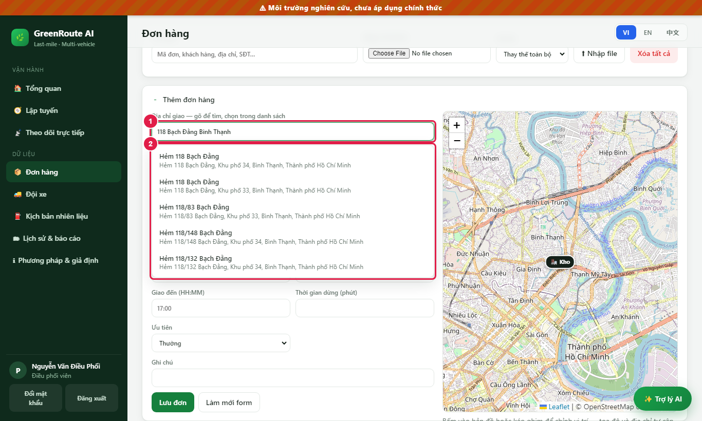
Hình 15. Gõ địa chỉ, chọn trong danh sách gợi ý
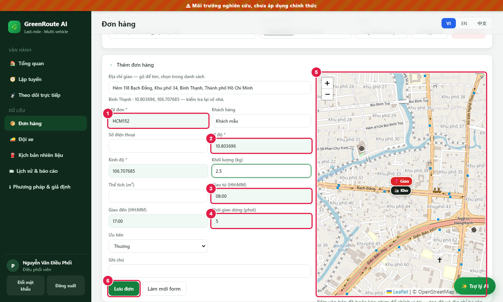
Hình 16. Các ô tự điền sau khi chọn địa chỉ (nền xanh nhạt)
Dòng chữ nhỏ dưới ô địa chỉ có thể nhắc “kiểm tra lại số nhà”: dịch vụ bản đồ đôi khi chỉ tìm được tới đầu hẻm hoặc tên đường. Hãy kiểm tra ghim trước khi lưu.
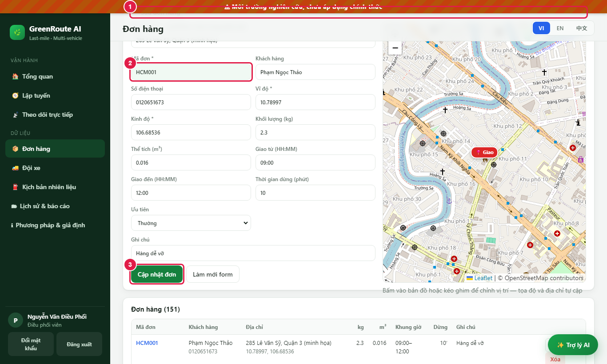
Hình 17. Sửa đơn: form mở sẵn dữ liệu của đơn
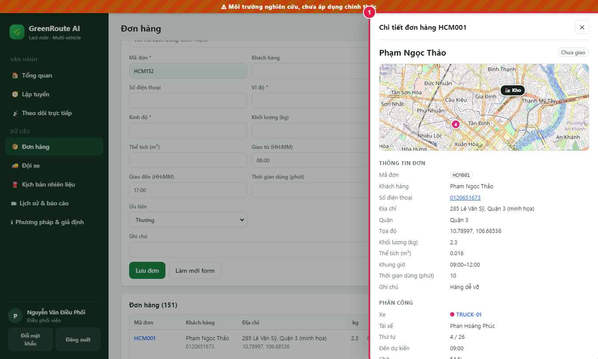
Hình 18. Ngăn chi tiết đơn hàng
Ngăn chi tiết cho biết khách, địa chỉ, khung giờ, xe được phân, thứ tự ghé, giờ dự kiến, trạng thái giao và vị trí ghi nhận khi tài xế bấm giao.
Hình 19. Thiết lập trước khi chạy
Ô Giá CO₂ (VND/kg): để 0 thì bộ tối ưu chỉ giảm chi phí. Nhập một số dương (ví dụ 5.000) thì mỗi kg CO₂ được tính như một khoản chi phí, nên bộ tối ưu ưu tiên xe ít phát thải hơn. Mức này cần nghiệp vụ phê duyệt.
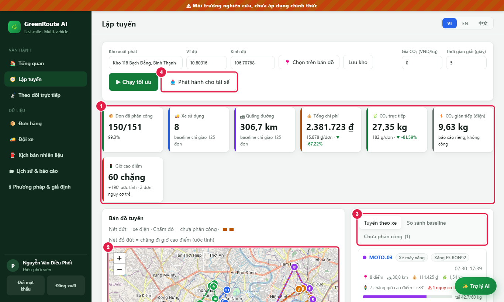
Hình 20. Kết quả tối ưu
| Số | Đọc kết quả |
|---|---|
| (1) | Chỉ số chính: số đơn được phân công, số xe dùng, tổng km, tổng chi phí, CO₂ trực tiếp, CO₂ gián tiếp từ điện lưới (báo riêng), số chặng chạy giờ cao điểm. Khi baseline giao được ít đơn hơn, thẻ ghi “baseline chỉ giao … đơn” thay vì % để tránh so sánh không công bằng. |
| (2) | Bản đồ: mỗi xe một màu; số trên chấm = thứ tự giao. Nét đứt = xe điện. Chấm đỏ = đơn chưa phân công. Nét đỏ đứt = chặng có thể kẹt giờ cao điểm (ước tính). |
| (3) | Các thẻ: Tuyến theo xe, So sánh baseline, Chưa phân công. |
| (4) | Phát hành cho tài xế (4.7). |
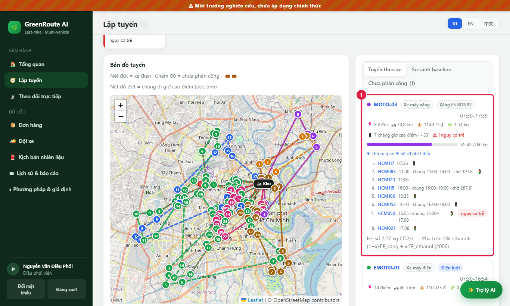
Hình 21. Một tuyến: điểm, km, chi phí, CO₂, tải; mở “Thứ tự giao & hệ số phát thải”
Mỗi thẻ xe cho biết số điểm, km, chi phí, CO₂, giờ chạy, mức tải và cảnh báo nguy cơ trễ. Mở Thứ tự giao & hệ số phát thải để xem giờ dự kiến tới từng điểm và hệ số dùng để tính CO₂ (kèm nguồn, năm).
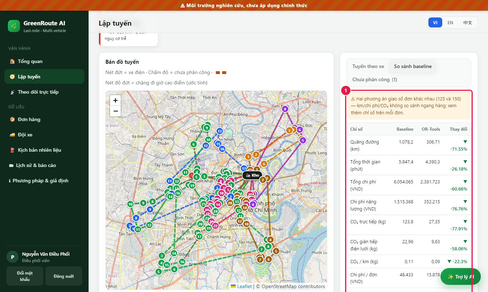
Hình 22. So sánh với phương án cơ sở (baseline)
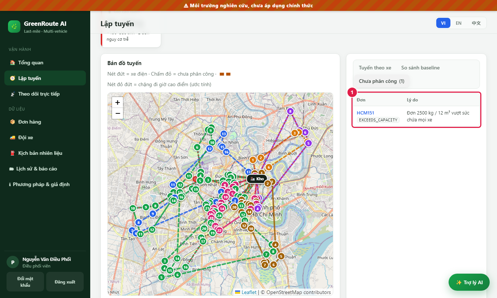
Hình 23. Đơn chưa phân công và lý do
| Lý do hiện trên màn hình | Nên làm gì |
|---|---|
| Không có xe sẵn sàng | Đánh dấu xe Sẵn sàng ở Đội xe. |
| Đơn vượt sức chứa mọi xe | Kiểm tra khối lượng/thể tích đơn, hoặc dùng xe lớn hơn. |
| Không xe nào đến kịp khung giờ / quay về kho trong ca | Nới khung giờ giao hoặc kéo dài ca xe. |
| Đội xe hết tải trọng/thời gian | Thêm xe hoặc nới khung giờ, rồi chạy lại. |
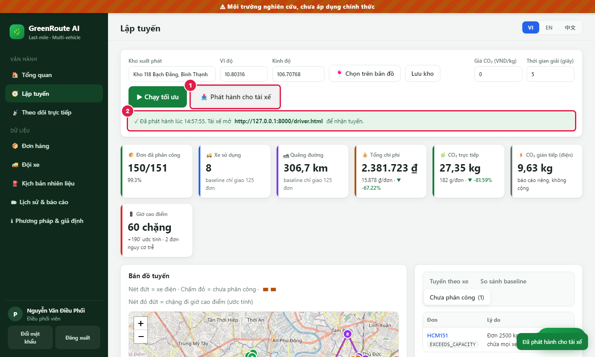
Hình 24. Phát hành phương án
Phát hành phương án mới sẽ thay phương án đang chạy. Chỉ phát hành lại khi thật sự cần đổi tuyến trong ngày.
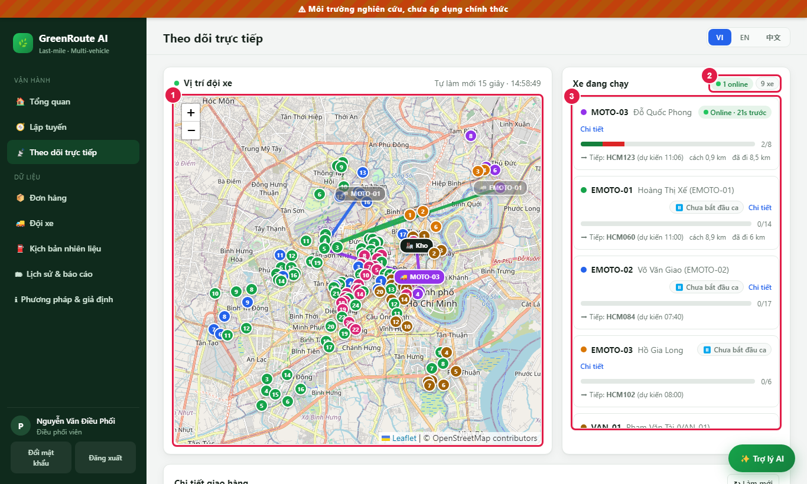
Hình 25. Theo dõi vị trí và tiến độ
| Số | Ý nghĩa |
|---|---|
| (1) | Bản đồ: vị trí hiện tại của tài xế đang chia sẻ, vệt đường đã đi và các điểm giao. Tự làm mới mỗi 15 giây. |
| (2) | Số tài xế đang online / số xe trong kế hoạch. |
| (3) | Từng xe: trạng thái (Online, Chưa bắt đầu ca, Mất tín hiệu), thanh tiến độ (xanh = đã giao, đỏ = thất bại), điểm tiếp theo và khoảng cách. |
“Mất tín hiệu” nghĩa là xe đang trong ca nhưng quá 5 phút không gửi vị trí: có thể tài xế tắt màn hình, mất mạng hoặc tắt GPS. Hãy gọi tài xế.
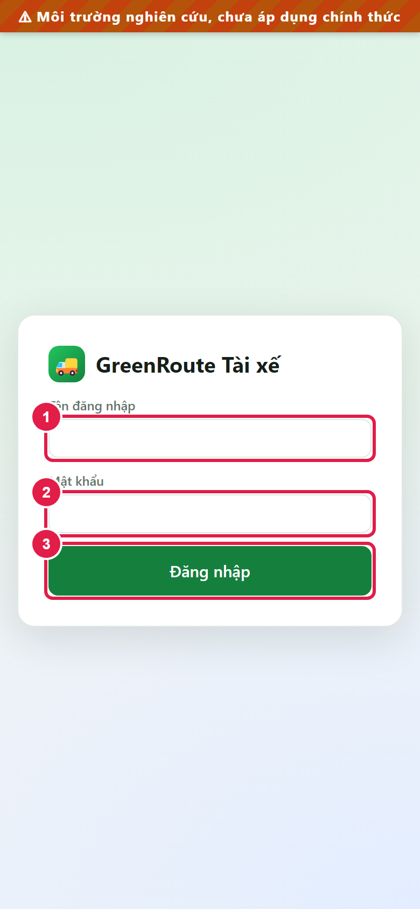
Hình 26. Đăng nhập trên điện thoại
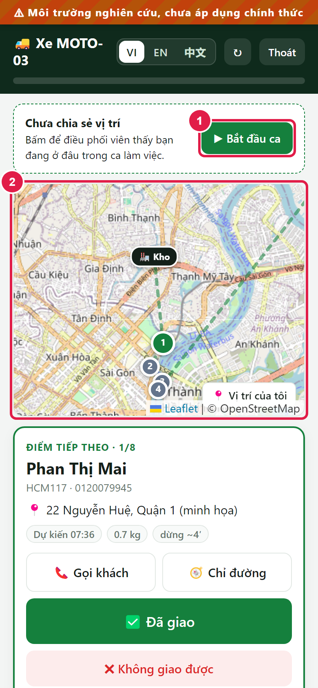
Hình 27. Trước khi bắt đầu ca
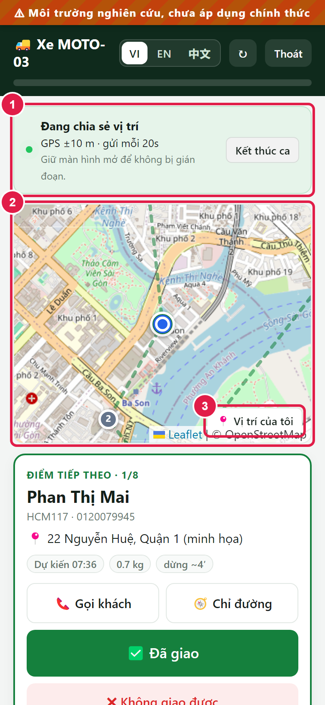
Hình 28. Đang chia sẻ vị trí
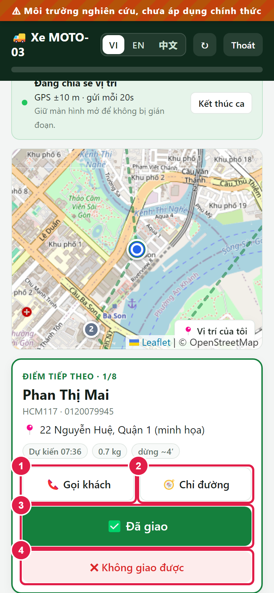
Hình 29. Thẻ điểm tiếp theo
Khi bấm Đã giao, app ghi kèm vị trí GPS. Nếu bạn ở xa điểm giao quá 300 m, đơn vẫn được ghi nhận nhưng có cảnh báo “Xa điểm giao” để điều phối kiểm tra. Hãy bấm khi đã tới nơi.
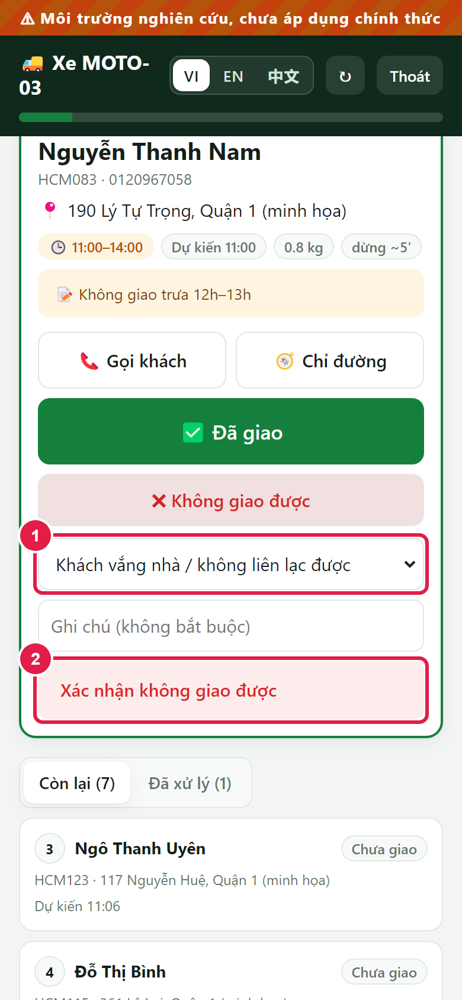
Hình 30. Chọn lý do không giao được
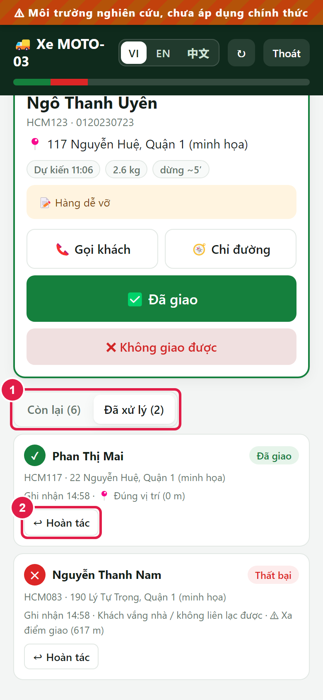
Hình 31. Danh sách đã xử lý
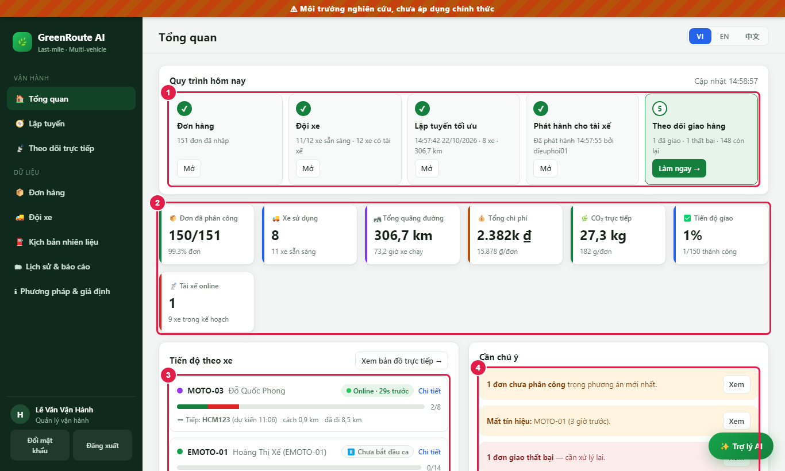
Hình 32. Trang Tổng quan
| Số | Ý nghĩa |
|---|---|
| (1) | Quy trình hôm nay: bước nào đã xong (dấu ✔), bước tiếp theo cần làm. |
| (2) | Chỉ số chính của phương án đang phát hành: đơn đã phân công, xe dùng, km, chi phí, CO₂, tiến độ giao, tài xế online. |
| (3) | Tiến độ theo xe: thanh tiến độ, điểm tiếp theo, khoảng cách. |
| (4) | Cần chú ý: đơn chưa phân công, xe mất tín hiệu, đơn giao thất bại. Bấm Xem để tới chỗ xử lý. |
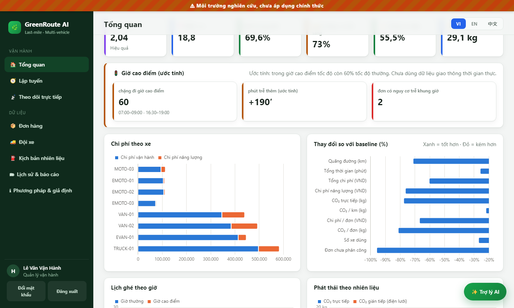
Hình 33. Phân tích: chỉ số hiệu quả, giờ cao điểm và biểu đồ
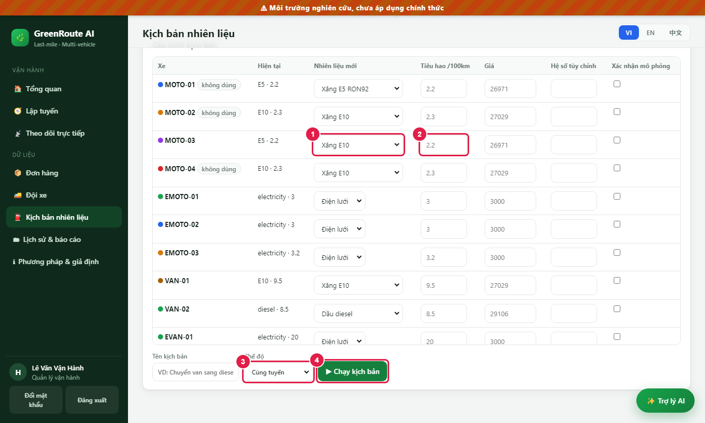
Hình 34. Thiết lập kịch bản đổi nhiên liệu
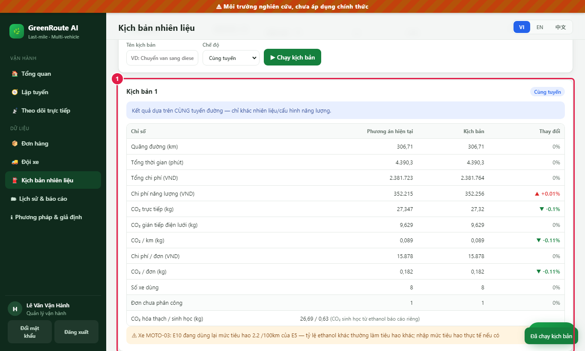
Hình 35. Kết quả kịch bản so với phương án hiện tại
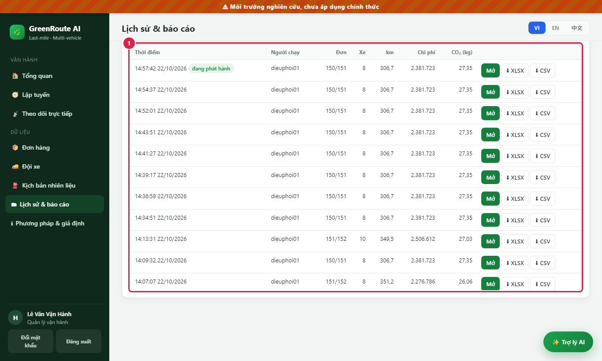
Hình 36. Lịch sử các lần tối ưu
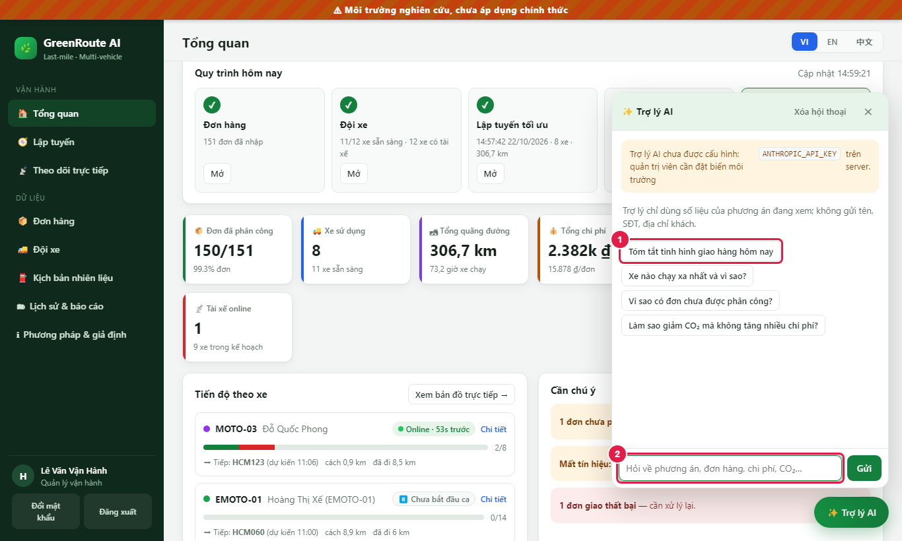
Hình 37. Trợ lý AI
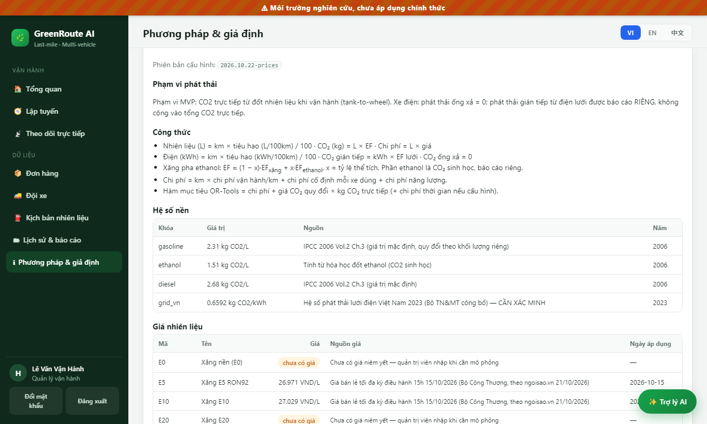
Hình 38. Trang Phương pháp & giả định
Trang này ghi công thức tính nhiên liệu, CO₂, chi phí, nguồn và năm của hệ số, phạm vi phát thải (CO₂ trực tiếp từ nhiên liệu khi vận hành), cách tính quãng đường và định nghĩa baseline. Dùng trang này khi cần đối chiếu số liệu.
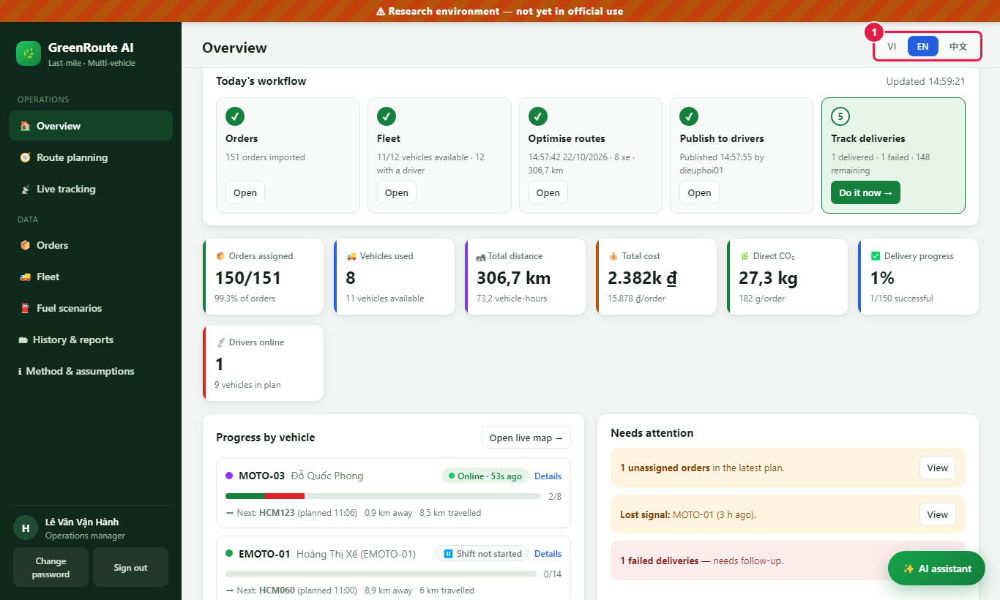
Hình 39. Giao diện tiếng Anh
Bấm VI, EN hoặc 中文 (1) ở góc trên bên phải. Lựa chọn được nhớ trên máy đó.
| Tình huống | Giải thích / cách xử lý |
|---|---|
| Số liệu, đơn hàng tự quay về như ban đầu | Bản online dùng máy chủ miễn phí: mỗi lần máy chủ khởi động lại, dữ liệu quay về bộ mẫu và tài khoản thử nghiệm. Đây là giới hạn của môi trường thử, không phải lỗi. |
| Trang mở rất chậm lần đầu | Máy chủ miễn phí đang “ngủ”. Chờ khoảng 1 phút rồi tải lại. |
| Điều phối không thấy vị trí tài xế | Tài xế cần bấm Bắt đầu ca, cho phép quyền vị trí và giữ app mở. Quá 5 phút không gửi vị trí sẽ hiện “Mất tín hiệu”. |
| Tài xế không thấy tuyến | Điều phối chưa phát hành, hoặc tài khoản tài xế chưa được gán xe (Quản trị kiểm tra), hoặc xe đó không có đơn trong phương án. |
| Đơn báo “Xa điểm giao” | Tài xế bấm Đã giao khi cách điểm giao hơn 300 m (hoặc tọa độ đơn sai). Kiểm tra lại với tài xế và tọa độ đơn. |
| Chi phí hiện “—” | Nhiên liệu của xe chưa có giá. Quản trị nhập giá ở Hệ số, giá & trọng số. |
| Số liệu có dùng chính thức được không? | Chưa. Hệ số phát thải là giá trị mặc định quốc tế, giá điện là giả định, quãng đường là ước tính (đường chim bay × 1,3). Cần nghiệp vụ phê duyệt nguồn trước khi dùng chính thức. |
| Bị khóa đăng nhập | Do nhập sai mật khẩu 5 lần. Chờ 5 phút hoặc nhờ Quản trị đặt lại mật khẩu. |
Ghi lỗi (Bug) hoặc yêu cầu thay đổi (CR) theo mẫu trong thư mục bug-reports/ của dự án: mỗi lỗi một file, có các bước tái hiện, kết quả thực tế kèm ảnh chụp màn hình và kết quả mong đợi. Ghi rõ tài khoản, vai trò, ngôn ngữ và thời điểm xảy ra.